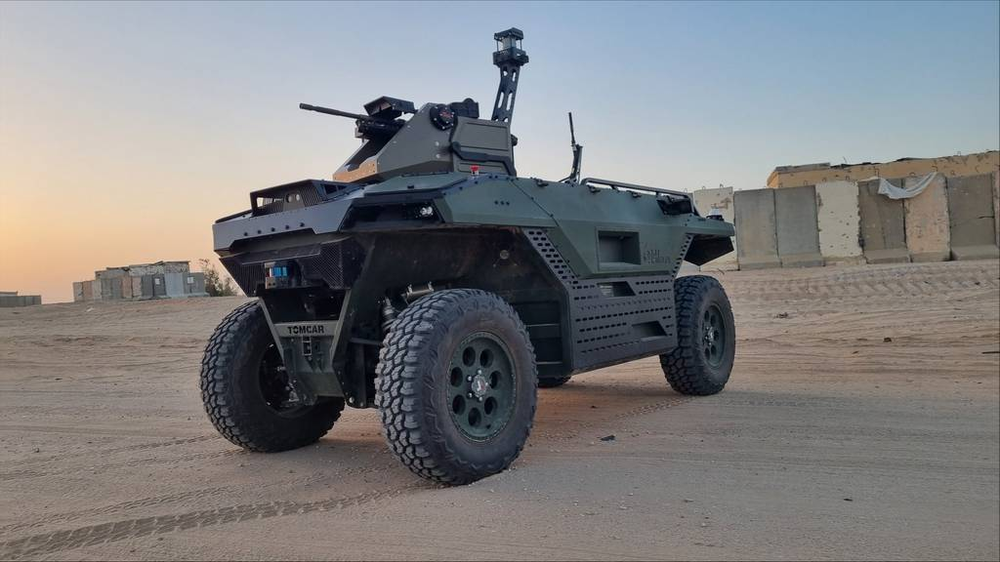
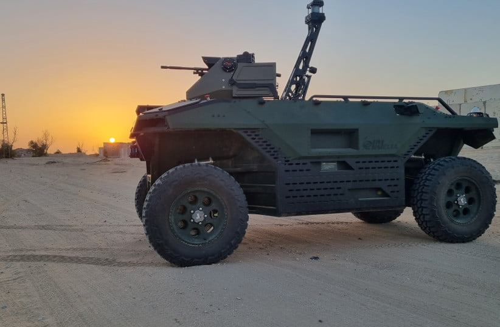

ဒီစက်ရုပ်တွေကို လက်ရှိမှာ ဗြိတိသျှ တပ်မတော်တင် မက အခြားသော ဥရောပ နိုင်ငံတွေကိုလဲ တင်ပို့ရောင်းချဖို့ စာချုပ် ချုပ်ဆိုထားပြီး ဖြစ်တယ်လို့ သိရပါတယ်။ ဒါပေမယ့် ဘယ်နိုင်ငံတွေကလဲ ဝယ်ယူထားလဲ ဆိုတာကိုတော့ ထုတ်ဖေါ်ပြောဆိုခြင်း မရှိပါဘူး။
ဒီ အပေါ့စား လူမဲ့ တိုက်ခိုက်ရေး စက်ရုပ်ကို IAI ရဲ့ ယခင် အောင်မြင်မှု ရရှိခဲ့တဲ့ စစ်သုံး စက်ရုပ် ထုတ်လုပ်မှုက ရရှိတဲ့ အတွေ့အကြုံတွေနဲ့ ပေါင်းစပ်ပြီး ထုတ်လုပ်ထားတာ ဖြစ်ပါတယ်။
REX MK II လို့ အမည်ပေးထားတဲ့ ဒီစက်ရုပ်ဟာ စစ်မြေပြင်မှာ အလုပ်မျိုးစုံ လုပ်ဆောင်နိုင်မှာ ဖြစ်ပါတယ်။ နောက်ပြီး ၄ ဘီးမောင်း စနစ်ကို တပ်ဆင်ထားတာမို့ ကြမ်းတမ်းတဲ့ မြေပြင် အနေအထား တွေမှာလဲ သွားလာနိုင်မှာ ဖြစ်ပါတယ်။ စစ်မြေပြင် အတားအဆီးတွေကို ဖြတ်ကျော်နိုင်ပြီး ကုန်အလေးချိန် ၁.၃ တန်ထိလဲ သယ်ဆောင်နိုင်မှာ ဖြစ်ပါတယ်။
အင်ဂျင်က Hybrid စနစ်မို့ ရန်သူနဲ့ နီးကပ်တဲ့ အချိန်မှာ အင်ဂျင်ပိတ်ပြီး လျှပ်စစ်မော်တာနဲ့ အလုပ်လုပ်နိုင်ပါတယ်။ တိတ်တဆိတ် စောင့်ကြည့်ရတဲ့ ထောက်လှမ်းရေး အလုပ်တွေ အတွက်လဲ အထူးပဲ သင့်တော်ပါတယ်။ ဒီလို အင်ဂျင်ပိတ်ပြီး လျှပ်စစ်ဓါတ်အားနဲ့ မောင်းနှင်နိုင်တာမို့ အနီအောက် ရောင်ခြည်ရှာ ကိရိယာတွေရဲ့ ထောက်လှမ်းခံရနိုင်မှုလဲ နဲသွားပါတယ်။

REX စက်ရုပ်က ၁.၃ တန်ထိ သယ်နိုင်တာမို့ စစ်သည်တွေ ချီတက်တဲ့အခါ အစားအစာ၊ သောက်ရေ၊ ခဲယမ်းမီးကျောက်နဲ့ အခြား စစ်ဆင်ရေး အသုံးအဆောင်တွေ အမြောက်အများ သယ်ဆောင်နိုင်ပါတယ်။ နောက်ပြီး ဒါဏ်ရာရ လူနာတွေကိုလဲ ထမ်းစင်နဲ့ သယ်နိုင်ပါတယ်။
သူ့မှာ ထောက်လှမ်းရေးအတွက် အီလက်ထရောနစ် အာရုံခံ ကိရိယာတွေ၊ အမြင်အာရုံခံ မှန်ပြောင်းတွေ နဲ့ ရေဒါစနစ်တွေ ပါဝင်ပါတယ်။ နောက်ပြီး ၇.၆၂ စက်လတ် (သို့) ၀.၅၀ (ပွိုင့် ဖိုက်) စက်သေနတ်ကြီးတွေလဲ တပ်ဆင်နိုင်ပါတယ်။
အခြားသော ပြိုင်ဖက် စက်ရုပ်တွေထက် သာတဲ့ အချက်ကတော့ ဒီစက်ရုပ်မှာ အသိဉာဏ်တု (Artificial Intelligence, AI) ပါဝင်တာပဲ ဖြစ်ပါတယ်။ AI ပါဝင်တဲ့ အတွက် အဝေးထိန်း စနစ် ပျက်သွားရင်တောင် ယာဉ်ပေါ်ပါ ကွန်ပြူတာက ဆက်လက် ထိန်းချုပ် မောင်းနှင်သွားနိုင်ပါတယ်။
IAI ကုမ္ပဏီက ဒီ REX Mk II အပြင် အခြား မောင်းသူမဲ့ ယာဉ်တွေနဲ့ စစ်မြေပြင်သုံး စက်ရုပ် တွေကိုလဲ ထုတ်လုပ်ပါတယ်။ Jaguar မောင်းသူမဲ့ ယာဉ်ကို အဓိက နယ်စပ်တွေမှာ လုံခြုံရေး ကင်းလှည့်ဖို့နဲ့ ထောက်လှမ်းရေး တာဝန် ထမ်းဆောင်ဖို့ ထုတ်လုပ်ထားပါတယ်။ RobARC ကတော့ မိုင်းရှင်းလင်းရေး စက်ရုပ် ဖြစ်ပါတယ်။ Robattle က ထောက်လှမ်းရေး စက်ရုပ်ဖြစ်ပြီး RobDozer က မောင်းသူမဲ့ မြေထိုးစက် (Bulldozer) ဖြစ်ပါတယ်။
IAI က ဒီစက်ရုပ်ကို အခြားသော ဥရောပ နိုင်ငံတွေကလဲစိတ်ဝင်စားကြမယ်လို့ မျှော်လင့်ထားပါတယ်။
